cr1mnsx
-
«Don't you dare go Hollow...»
 PS5
ПОСЛЕДНИЙ ЗАПУСК НА PLAYSTATION 5 · 29 СЕНТЯБРЯ 2026Grand Theft Auto V🏆 12/78 трофеев (17%) · D RankО ИГРОКЕПОСЛЕДНИЙ ЗАПУСК PlayStation 5ПЛАТФОРМА PS5 & PCЖАНР SoulslikeСТАТИСТИКА((•)) ТРАНСЛЯЦИЯ & ПРОФИЛИ
PS5
ПОСЛЕДНИЙ ЗАПУСК НА PLAYSTATION 5 · 29 СЕНТЯБРЯ 2026Grand Theft Auto V🏆 12/78 трофеев (17%) · D RankО ИГРОКЕПОСЛЕДНИЙ ЗАПУСК PlayStation 5ПЛАТФОРМА PS5 & PCЖАНР SoulslikeСТАТИСТИКА((•)) ТРАНСЛЯЦИЯ & ПРОФИЛИ
Games
-
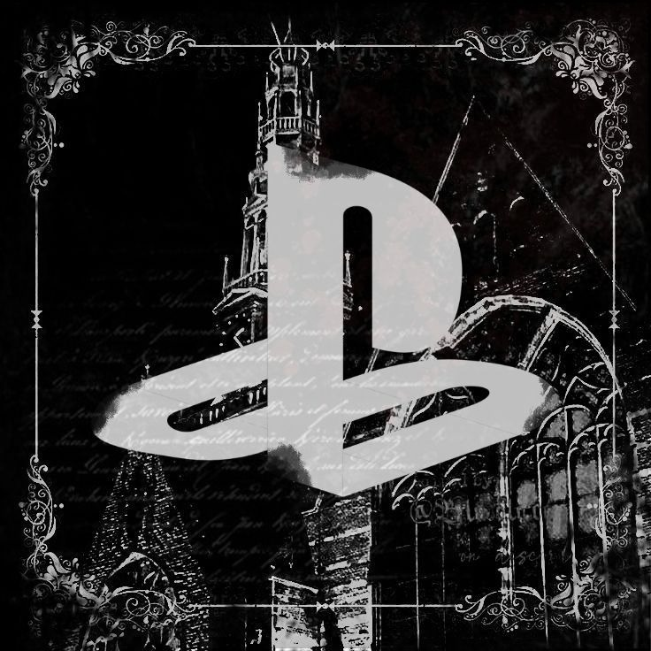
PlayStation Network · Профиль Cr1mnsx 🎮 Последний запуск: Grand Theft Auto V (29 сентября 2026) · 647 трофеев
Игровой профиль на PlayStation 5. 647 трофеев, 2 платины, последние запущенные игры и трофейный прогресс.
PS5
↗Последний запуск на PlayStation 5 · 29 сентября 2026Grand Theft Auto V🏆 12/78 трофеев (17%) · D RankОткрыть профиль на PSN.GG ↗🏆 2 платины (Spider-Man)🥇 20 золотых🥈 128 серебра🥉 497 бронзы⭐ 186 LVL -
Grand Theft Auto V
🎮 Последний запуск на PS5 · 29 сентября 2026 · 17% трофеев
-
Brawl Stars · Профиль Cr1mnsx
🏆 38,200+ кубков · 106 бойцов · Ежедневный актив · #2RGUQJQ0R
-
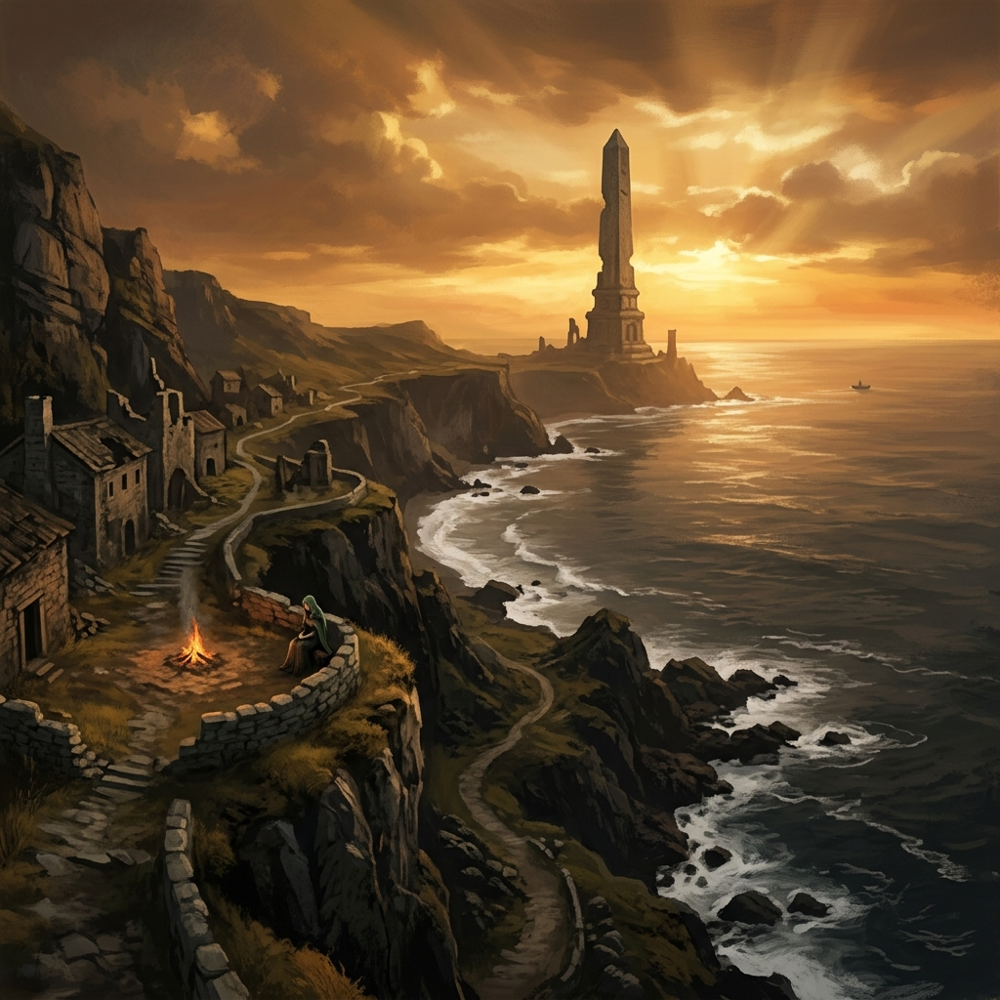
Dark Souls II — Тема Маджулы (Majula) Мотои Сакураба · Культовый саундтрек заката Дранглика · Нажмите для включения темы -
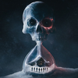
Until Dawn Интерактивный кинематографичный хоррор на заснеженной горе Блэквуд. -
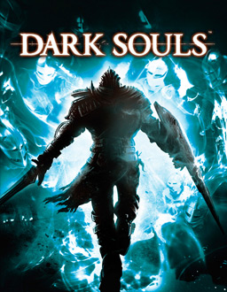
Dark Souls Remastered (Top-1 Souls) Лордран, костры и незабываемое путешествие сквозь пепел и тьму. -
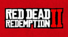
Red Dead Redemption 2 Монументальный эпос Rockstar Games о закате эпохи Дикого Запада. -
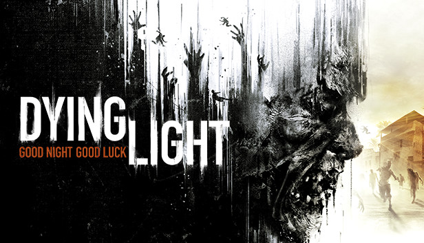
Dying Light Адреналиновый паркур и выживание среди орд зомби в Харране. -
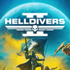
Helldivers 2 Тактический кооперативный шутер нового поколения во имя Супер-Земли. -
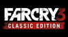
Far Cry 3: Classic Edition Безумие на Рук Айленде, охота в джунглях и Ваас Монтенегро. -
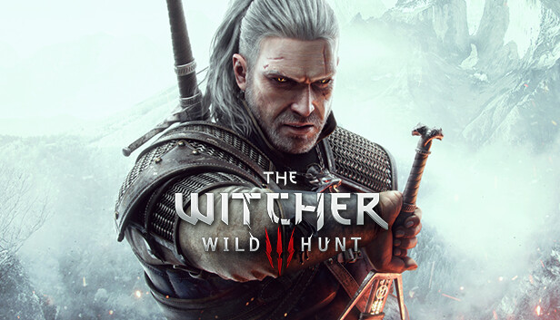
The Witcher 3: Wild Hunt Великая ролевая сага о ведьмаке Геральте, поиске Цири и Дикой Охоте. -
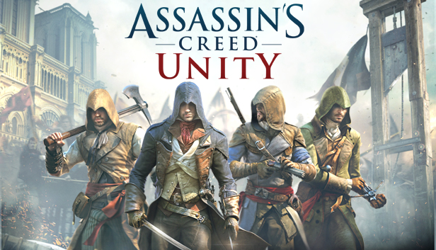
Assassin's Creed Unity Париж Великой французской революции, непревзойденный паркур и лор.
Twitch
-
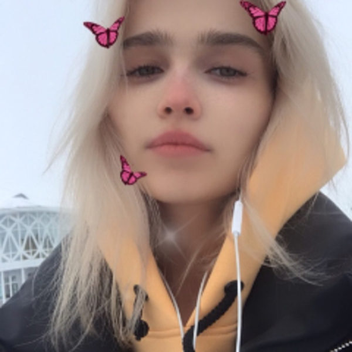
cr1mnsx на Twitch twitch.tv/cr1mnsx · Мой профиль на твиче -
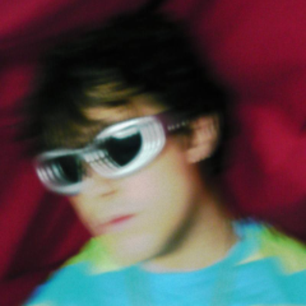
mafanyaking (Влад Мафаня) twitch.tv/mafanyaking · Любимый стримерОФФЛАЙНСтрим Влада Мафани на Twitch - ТГК Мафани (Toxic Legion) t.me/toxiclegion · Официальный телеграм-канал Мафани
- Сайт Мафани (Архив Пранков) mafanya.ru · Все легендарные пранки и проекты
- Влад Клёвые Тачки (Диор Армани) t.me/VLADAPRMANI · Телеграм Влада, легендарного персонажа лора
- Новости по Мафане (Бомбастер) t.me/bombastertg · Нарезки, анонсы и свежие новости
Игры
-
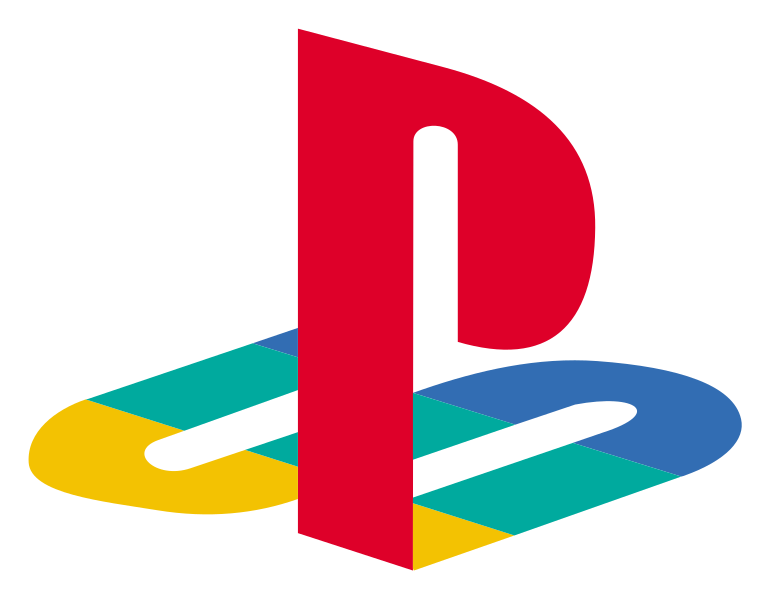
Tekken 3 (Sony PS1) Культовый 3D-файтинг · Джин Кадзама, Хваран, Эдди Гордо · 60 FPS - Crash Bandicoot 3: Warped Naughty Dog · Платформер с путешествиями во времени · Топ-1 PS1
- Crash Team Racing (CTR) Naughty Dog · Легендарные аркадные гонки с дрифтом и оружием
- Crash Bandicoot 2: Cortex Strikes Back Золотая классика Naughty Dog · 25 уровней, ранец и Поляр
- Crash Bandicoot (Оригинал 1996) Первое культовое приключение сумчатого бандикута на Wumpa Island
- Mortal Kombat Trilogy Midway · Все бойцы и арены классической трилогии · Fatality & Brutality
- Silent Hill Konami / Team Silent · Культовый психологический хоррор 1999 года
- Resident Evil 3: Nemesis (на русском) Capcom · Побег Джилл Валентайн из Раккун-Сити · Русская версия
- Resident Evil: Director's Cut Capcom · Особняк Спенсера · DualShock версия survival horror
- Metal Gear Solid (Диск 1) Хидэо Кодзима / Konami · Кинематографичный тактический стелс-экшен
- Gran Turismo 2 (Arcade Mode) Polyphony Digital · Главный автосимулятор PlayStation 1 · Сотни авто
- Castlevania: Symphony of the Night Konami · Шедевр Алукарда в замке Дракулы · Родоначальник метроидваний
- Tony Hawk's Pro Skater 2 Neversoft / Activision · Скейтборд-культ 2000 года с топовым саундтреком
- Spyro the Dragon Insomniac Games · Полёт, пламя и сбор кристаллов в мире драконов
- Twisted Metal 2: World Tour SingleTrac / Sony · Смертельные автобои по всему миру · Sweet Tooth
- Grand Theft Auto 2 Rockstar Games · Война банд в ретро-футуристичном городе Зайбацу
- PlayStation 1 (PSX) · Запуск своего диска / ROM Запуск любых своих образов .ISO, .BIN, .CHD, .PBP · DualSense & геймпады
Линки
- ВКонтактеvk.ru/cr1mnsx
- Steam Профильcr1mnsx
- Twitch Профильtwitch.tv/cr1mnsx
- Канал Мафани на Twitchtwitch.tv/mafanyaking
- ТГК Мафани (Toxic Legion)t.me/toxiclegion
- Сайт Мафани (Архив Пранков)mafanya.ru
- ТГ Влада Клёвые Тачкиt.me/VLADAPRMANI (@VLADAPRMANI)
- Новости по Мафане (Бомбастер)t.me/bombastertg
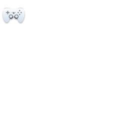
PlayStation NetworkPSN: cr1mnsx · PlayStation 5- Telegramt.me/cr1mnsx
Об этом сайте
-
Статистика сайта и посетители Живой счётчик входовМониторинг посетителей сайтаREALTIMEУникальных гостей 295Всего входов на сайт 346Вошли сегодня 14Сейчас в сети 1 в сети
-
Сайт cr1mnsx · Frutiger Aero x PS5/PS3 XMBПортфолио в дизайне PlayStation 3 XrossMediaBar
- Видео-аватарMax Verstappen (Red Bull Racing)
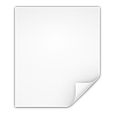
Живой аквариум на фонеSkeuomorphic live video background- Звуки меню PS3Синтезированы через Web Audio API
- Шрифт M PLUS 1pM+ Fonts Project · SIL OFL